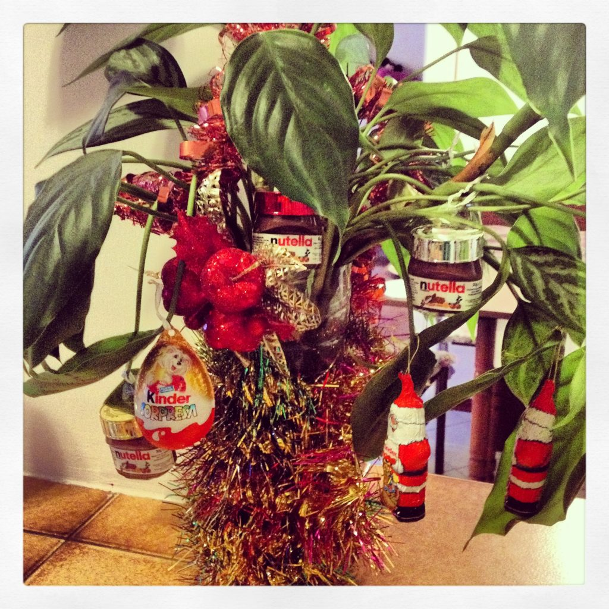

"Christmas plant"
Years ago I spent one school year in Italy with the kids, because I wanted them to attend an Italian public school (yeah, they hated me in the beginning and obviously they didn't want to leave in the end, same old story...). We stayed in a tiny apartment, where we shared one big bedroom and where we had just one puffy armchair because there wasn't even enough room for a sofa. Let alone for a Christmas tree. But you don't need a tree to create the Christmas atmosphere, you just need a plant, some tiny Nutella jars and the Ovetti Kinder (infamously illegal in the States). Oh, happy days!